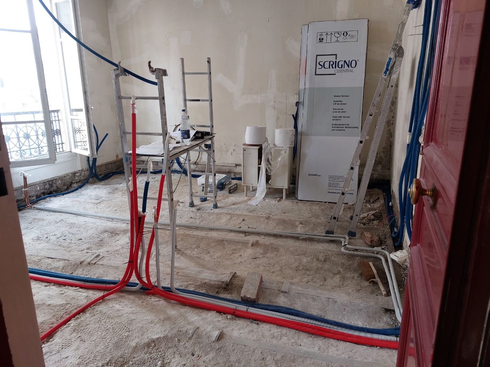

Nos métiers · 04
Plomberie à Paris et en Île-de-France
Nous créons, déplaçons ou remplaçons les réseaux d’eau et installons les équipements sanitaires, dans le cadre d’une rénovation ou d’une intervention ciblée.

Interventions
Ce que nous réalisons
- Création et déplacement des arrivées d’eau
- Évacuations et raccordements
- Pose de douche, baignoire, lavabo et WC
- Remplacement de chauffe-eau ou ballon
- Recherche et réparation de fuite
- Raccordement de la cuisine et de l’électroménager
Questions fréquentes
Vos questions sur ce métier
Peut-on déplacer une salle de bain ou une cuisine ?
Oui, dans la limite des pentes d’évacuation. La faisabilité est vérifiée lors de la visite.
Intervenez-vous après un dégât des eaux ?
Oui : recherche de l’origine, réparation, puis remise en état des supports et des finitions.
Fournissez-vous les équipements ?
Nous pouvons les fournir ou poser ceux que vous avez choisis. Le devis le précise.
Projets associés
Ce métier intervient aussi dans
Un projet de plomberie ?
Devis gratuit, établi après visite sur place.